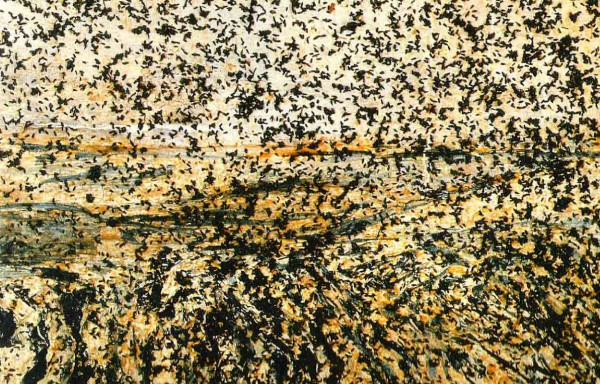

-
“I Wanted So Much to Be Someone”
by David Wallace October 23, 2012

My Struggle: Book One
Karl Ove Knausgaard
translated by Don Bartlett
Archipelago, 2012In order to become an author, how should a life be? Lurking somewhere in brain or heart of the ambitious writer who seeks to harvest his or her own story, this question seems both obvious and somewhat disreputable. One thinks of, among many examples, the anxiety of Stephen Daedalus, who asks himself by what right can he be transformed into an artist, later finding an obscure answer in his own sense of beauty. It seems that if you have to ask, you’ll never know. Yet the question is overcome time and again, and the künstlerroman is alive and well.
One traditional solution to this question of authority has been the methods of the roman à clef. The proposition of the roman à clef is to mine the material that comprises the author’s life, combing the years to discover the memories and experiences that are most vivid for the author (and those which can be most vividly expressed). This material is reincorporated into the framework of the novel’s fiction, and the author thereby gains distance and the freedom to reshape events as necessary. In this mode, literary form dominates life.
In recent history, the straight memoir or autobiography has held a subsidiary position to the novel. One crucial difference rests in a traditional assumption about the ocean of detail that fills out a life. Life, as it is lived, is full of detail that has no obvious literary value: what we eat on a given day, where we go shopping, the buildings on a walk we take between two places, people we see on the street. The roman à clef is a tool that digests the details that would otherwise fall into a memoir, rearranges them as necessary, weaves them into fabric of literary tropes, and raises them to the status of a universal. The distinction of changing a name, a person’s characteristic tic, or what was served at a meal seems small, but its strength is belied by the persistence of the convention.
However, it’s a convention that raises an equally persistent counter: if the desire of an author is to tell or explain something about the world as it is, how can this manipulated reality be more real than the events as they occurred? Presumably this is part of the appeal of memoirs and biographies: to gain unmediated access to real events. To know about things as they really were and are. Recently it has been suggested that the craving for this type of information has begun to exceed the desire for symmetry and order of the old literary forms.
Karl Ove Knausgaard is a Norwegian author, forty-three years old, and the author of two previous novels. My Struggle is the first translated volume in an enormous, six-volume project of autobiography, subtitled as a novel in the original edition (though this appellation, interestingly, is omitted from the US edition).
This first volume is divided into two sections. The first is largely a series of childhood recollections unassumingly told, spanning the mundane, the humorous, and the poignant. The second part deals with the death of Knausgaard’s father, a solitary and sometimes cruel figure who is constantly present in the young Karl Ove’s thoughts throughout the book. Knausgaard’s father abandons his family and slips into a spiral of alcoholism, leaving the adult Karl Ove and his brother to pick up the pieces when he dies in squalor. These are the two main keys in which the book is played, but the structure is loose, and along the way are digressions, miniature essays, and detours back to the “present tense” of writing the book itself, where Knausgaard reflects on subjects as diverse as contemporary art and the displeasures of raising children.
The books have created a scandal (as well as record-breaking sales) in Norway for the frank disclosure of the secrets, deeply private and occasionally sordid, of Knausgaard’s family and marriages. Knausgaard has himself called the writing of the books a “Faustian bargain.” The outrage comes from a specific cultural context (Americans, for instance, are no strangers to the tell-all memoir), but Knausgaard’s ambitions are clearly international. As the stock of nonfiction continues to rise and the memoir is not only critically accepted, but is regarded as having equal footing with the novel, My Struggle is a particularly timely work. However, the role that My Struggle fills in this shift is not exactly clear.
The most obvious literary forefather is Proust, who Knausgaard acknowledges early on as a generative source: “I not only read Marcel Proust’s novel À la recherché du temps perdu but virtually imbibed it.” However, Knausgaard does not aspire to the perfect architecture of Proust, or his ability to create a disquisition on any object that falls into his field of vision. Nor is he a descendant of the postmodern impulse to interrogate the line between truth and fiction, or to question the sources of truth or the author’s authority. Knausgaard is an aesthete, with an affinity for Old Master painting and some views that could be called conservative. It may be more helpful to think about My Struggle as a contestation of conventions dividing fiction and memoir, but with roots in an older tradition that unironically holds up the power and self-sufficiency of works of art. Knausgaard seeks to destroy, but also to reinvigorate.
For instance, the book opens with an early episode in the interpretation of life’s raw material. The young Karl Ove, aged eight, is watching a TV news report about a sunken fishing boat and suddenly sees the outline of a face appear in the contours of the sea. He runs to tell his father, who remains impassive and uninterested, hammering away at a boulder in the garden. The moment seems almost overripe with metaphorical significance, but Knausgaard deliberately takes care not to exploit the moment in a conventionally “novelistic” way. Instead, he moves to an almost essayistic register, explicating this formative moment in a surprisingly forward way:
Meaning requires content, content requires time, time requires resistance. Knowledge is distance, knowledge is stasis and the enemy of meaning +
From the start, the reader is forced to consider the proposed schema. Knausgaard, both as character and as narrator of his own life is obsessed with the idea of “meaningfulness.” To many readers, taking “meaning” wholesale as a concept may seem rather dubious. Knausgaard’s mission is partly to rescue the term, and he tends to think of meaningfulness as the feeling of meaning. If the impression of meaningfulness is paramount, it seems natural that Knausgaard’s pole stars are childhood and family tragedy, particularly the death of a parent.
By contrast, “knowledge” is considered to be a less valuable way of looking at the world, a way of abrogating experience and replacing it with information. In childhood, everything is meaningful exactly because so little is known, and everything is invested with potential of what things might be. An adult may still have meaningful experience, but it is always mediated by the voice of reason in his or her head. For instance, when Karl Ove’s father dies, the adult narration looks for an explanation for his emotional reaction, only to find that it can’t be properly articulated. In one scene, Karl Ove has boarded a plane to go see his father’s body, and finds that he can’t reconcile his train of thought with his grief:
Everything I saw, faces, bodies ambling through the cabin, stowing their baggage there, sitting down, was followed by a reflective shadow that could not desist from telling me that I was seeing this now while aware that I was seeing this, and so on ad absurdum, and the presence of this thought-shadow, or perhaps better, thought-mirror, also implied a criticism, that I did not feel more than I did +
Of course, shortly thereafter he bursts into sobs and laughter as the airplane takes off, and continues to cry while being aware of the woman next to him stonily staring into her book.
This and other moments in My Struggle are not a retelling of memory as much as a transcription of it, and the experience is strangely compelling. It is an outpouring of anything and everything that Knausgaard associates with a given moment in time, and the feeling of reading it is somehow purgative. Much of its strength comes from the absence of typical novelistic “shaping” of the author’s experience: in the same airplane scene, after his outburst Karl Ove notices the book that the woman is reading and absurdly remarks to himself, “I had read it once. Good idea, poor execution.” His adult reflections are filled with doubts, hesitations, asides, and intellectualizations that circle around events and seem in tune with our own often-uncertain reception of events in real time.
However, in the first section of the book, Knausgaard’s childhood, the outpour competes less with the intellect. His childhood is suburban, middle class, and largely uneventful. Karl Ove plays in an untalented band, slacks off in school, has different short-lived crushes on girls in his class, and sneaks out of the house on New Year’s Eve to get drunk. A great deal depends on the reader accepting the importance of the access to these thoughts as much as the thoughts themselves, as if Knausgaard has presented a diary, one written simultaneously for himself and for you. Here is a typical example of Knausgaard’s attention to the detail of the past:
This evening, the plates with the four prepared slices awaited us as we entered the kitchen. One with brown goat’s cheese, one with ordinary cheese, one with sardines in tomato sauce, one with clove cheese. I didn’t like sardines and ate that slice first. I couldn’t stand fish; boiled cod, which we had at least once a week, made me feel nauseous, as did the steam from the pan in which it was cooked, its taste and consistency. I felt the same about boiled Pollock, boiled coley, boiled haddock, boiled flounder, boiled mackerel, and boiled rose fish. With sardines it wasn’t the taste that was the worst part — I could swallow the tomato sauce by imagining it was ketchup — it was the consistency, and above all, the small slippery tails +
This continues. No memoir is free from an amount of situational detail, which confers a sense of authenticity to the moment as it was lived. The same type of description is commonly seen in a great deal of fiction, a mimetic gesture that helps make things tangible. Knausgaard’s intent is not merely to make a gesture, but rather rather his goal is to fill his account of life with as much of this type of detail as possible. Like automatic writing, it becomes the key that returns the meaningfulness to moments as the sense of proportion between the “important” and the “unimportant” is lost.
The adult Knausgaard implies that this method is what has made the book possible, but he couches this admission in an unusual way:
For several years I had tried to write about my father, but had gotten nowhere, probably because the subject was too close to my life, and thus not so easy to force into another form, which of course is a prerequisite for literature. That is its sole law: everything must submit to form. If any of literature’s other elements are stronger than form, the result suffers +
Knausgaard is only able to complete a book about his father by refusing to reincorporate him into a typical novel. The memories must be exhumed exactly as they are, without the restructuring of a “classic” literary form. But not without form altogether. The torrent of memory requires a supplement, the thoughts of the mature writer, to keep it coherent and give it the form it requires.
It would be a mistake to attribute the interest of Knausgaard’s work solely to its transparency or essential truthfulness. It is certainly not the first work to assume the mantle of complete correspondence between characters as they appear and as they are in the world, while maintaining a loosely “novelistic” structure. For Knausgaard the transparency has a purpose in mind, and relates back to the idea of finding the meaning in things. As the second part of My Struggle begins by recounting Knausgaard’s attempt to write his second novel, the work is lifted into a more rarified aesthetic argument. Knausgaard implicitly acknowledges the somewhat unfashionable nature of this line of thought, aligning his interests with pre-20th century painting and its goal of representation. He writes movingly about a Rembrandt self-portrait he admires, describes his strong but ineffable feelings as he flips through a book of Constable paintings. In these passages he gives more insight into the underpinning of his project:
Those…who call for more intellectual depth, more spirituality, have understood nothing, for the problem is that the intellect has taken over everything. Everything has become intellect, even our bodies, they aren’t bodies anymore, but ideas of bodies, something is situated in our own heaven of images and conceptions within us and above us, where an increasingly large part of our lives is lived. The limits of that which cannot speak to us — the unfathomable — no longer exist. We understand everything, and we do so because we have turned everything into ourselves.
The point of this remark is taken in the previous stream of memory; the intellect has been evaded, at least temporarily, by simply taking up the act of accurate representation, as one might paint a landscape. We can try to have experience without thinking about experience.
Knausgaard doesn’t ask you to identify with the details themselves, but instead to investigate your own private memories and to share in the commonality of having your own unique experiences. How did you feel about your childhood meals? What records did you listen to as a teenager? The feeling of those moments is not based on the experiences themselves but instead an invitation to share in the kind of experiences they are. The effect can be almost hypnotic, as recollection after recollection passes in front of you, almost casual but full with the residue of fact. It is like being let in on a secret, but ultimately the secret revealed is a window into the specific experience of another person.
Yet there is a fragile tension here. Looking for the thread of non-intellectualized experience seems deeply at odds with a work that is willing to ruminate at length on (and quite abstractly) on the search for meaning. At the same time, it doesn’t seem as if the outpouring of memory could survive without these types of essayistic passage to provide context, to situate them in a framework that keeps reflections from simply being an undigested catalog of thoughts. And once the above passage has been read, hasn’t the book’s project of creating meaning by transcription become an instrument of a more reflexive, even intellectual, project?
But this is no great contradiction. The importance of Knausgaard’s work lies in the ability to engage honestly with his subjects: as a thinking, educated person, he would be remiss to suppress the intellectual mechanism that is constantly spinning in his mind. A completely unmediated experience would be a deception, a literary artifice just as deliberate as the taking of novelistic liberties. The objective then is a balance instead of a synthesis, a method of contrast and separation between our thoughts and our experiences that attempts to preserve each.
In the work’s second section Karl Ove and his brother spend a great deal of time preparing the funeral and cleaning the house in which their father died, leaving behind a deep record of decay and filth. As he systematically scrubs the trace of his father form each room, Knausgaard recognizes the inevitability of meaningful experience in any life, and these moments naturally become reincorporated back into Knausgaard’s question of form and meaningfulness. Scrubbing away the layers of decay left by his father needs no intellectual foundation, but an intelligent person can (and inevitably will) provide metaphorical significance for the situation.
Knausgaard bookends the work with some reflections on death, imposing one final boundary of form by meditating on the event in life that, according to Knausgaard, makes its form most apparent:
For humans are merely one form among many, which the world produces over and over again, not only in everything that lives but also in everything that does not live, drawn in sand, stone, and water. And death, which I have always regarded as the greatest dimension of life, dark, compelling, was no more than a pipe that springs a leak, a branch that cracks in the wind, a jacket that slips off a clothes hangar and falls to the floor +
In the end the circle between meaning and form is closed. For Knausgaard, death gives form to life by providing a terminus, a common boundary, just as each inanimate object has its own properties. But moreover, the strength of death as a form lies in its inability to be thought: as much as we’d like to make death merely intellectual, we cannot do so. The ceasing of experience is the definitive sign that we must attempt to hold onto whatever experience in life we can, whatever that life may end up being.